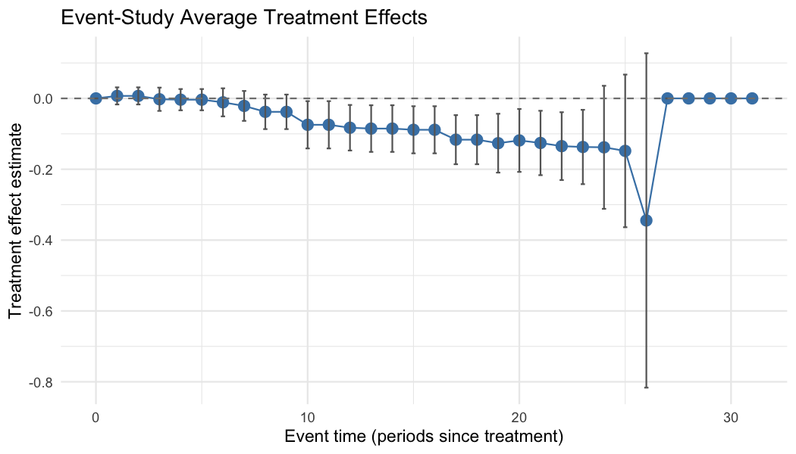

The fetwfe package implements fused extended two-way fixed effects (FETWFE), a methodology for estimating treatment effects in difference-in-differences with staggered adoptions.
In staggered-adoption settings — where units become treated at different times — treatment effects typically vary across adoption cohorts and over time since treatment. The conventional two-way fixed effects (TWFE) estimator is biased when effects are heterogeneous like this, because it effectively uses already-treated units as controls for newly-treated ones, contaminating the estimate.
FETWFE instead fits a fully heterogeneous model — a separate effect for every cohort and time period — and applies a fusion penalty that shrinks together effects which are similar across neighboring cohorts and periods. This pools the cohort-by-time effects in a data-driven way (collapsing them where they genuinely agree, keeping them distinct where they differ) and, unlike ad hoc model selection, comes with asymptotically valid standard errors and confidence intervals for the resulting estimates.
- For a brief introduction to the methodology, as well as background on difference-in-differences with staggered adoptions and motivation for FETWFE, see this blog post.
- For more detailed slides on the methodology (but less detailed than the paper), see here.
- Check out the most recent draft of the full paper here.
- This blog post explains a little more about what the package does under the hood, if you’re interested.
Installation
To install the released version of fetwfe from CRAN:
install.packages("fetwfe")Or the latest development version from GitHub:
# install.packages("remotes") # if needed
remotes::install_github("gregfaletto/fetwfePackage")A worked example: fit, extract, plot
The primary function is fetwfe(). Here it is applied to the divorce dataset from the bacondecomp package — the unilateral (“no-fault”) divorce / female-suicide panel of Stevenson and Wolfers (2006), reproducing the empirical application in Faletto (2025, Sec. 8.2):
library(fetwfe)
library(bacondecomp)
data(divorce)
# Female subset; `changed` is the absorbing 0/1 divorce-reform indicator, and the
# response is the elasticity-scaled female suicide rate. Noise variances are
# supplied (precomputed by REML) to keep the call fast.
divorce_f <- divorce[divorce$sex == 2, ]
res <- fetwfe(
pdata = divorce_f,
time_var = "year",
unit_var = "st",
treatment = "changed",
covs = c("murderrate", "lnpersinc", "afdcrolls"),
response = "suiciderate_elast_jag",
sig_eps_sq = 0.0344,
sig_eps_c_sq = 0.1507,
add_ridge = TRUE,
q = 0.5
)1. The overall ATT. The aggregated effect and its 95% Wald interval:
round(c(
ATT = res$att_hat,
SE = res$att_se,
CI_low = res$att_hat - qnorm(0.975) * res$att_se,
CI_high = res$att_hat + qnorm(0.975) * res$att_se
), 4)
#> ATT SE CI_low CI_high
#> -0.0602 0.0188 -0.0970 -0.0233(summary(res) prints the full report — overall ATT, per-cohort and event-study effects, and model details.)
2. The heterogeneity underneath. The overall ATT is an average; cohortStudy() and eventStudy() return the effects by adoption cohort and by time since treatment as tidy data frames — the effects FETWFE kept distinct rather than fusing to zero:
cohortStudy(res)
#> cohort estimate se ci_low ci_high p_value selected
#> 1 1969 0.00000000 0.000000000 0.000000000 0.000000000 NA FALSE
#> 2 1970 -0.44401171 0.046498180 -0.572555500 -0.315467910 0.000000e+00 TRUE
#> 3 1971 -0.02633974 0.020112012 -0.081939211 0.029259735 8.474215e-01 TRUE
#> 4 1972 -0.01611957 0.009359074 -0.041992646 0.009753503 5.468636e-01 TRUE
#> 5 1973 -0.06452464 0.013062067 -0.100634602 -0.028414670 7.037396e-06 TRUE
#> 6 1974 -0.03001991 0.012978739 -0.065899516 0.005859696 1.707508e-01 TRUE
#> 7 1975 0.00000000 0.000000000 0.000000000 0.000000000 NA FALSE
#> 8 1976 -0.04379642 0.063672429 -0.219818269 0.132225428 9.976219e-01 TRUE
#> 9 1977 -0.12389080 0.024178412 -0.190731798 -0.057049799 2.691903e-06 TRUE
#> 10 1980 -0.04013225 0.061547270 -0.210279123 0.130014613 9.984244e-01 TRUE
#> 11 1984 0.00000000 0.000000000 0.000000000 0.000000000 NA FALSE
#> 12 1985 0.14972561 0.050875421 0.009080968 0.290370244 2.880518e-02 TRUE3. Plot it. plot() draws the event-study estimates with confidence intervals (or per-cohort average effects with type = "catt"):
plot(res, type = "event_study")
For the full set of vignettes and function documentation, see the package website and the CRAN page.
Penalty and fusion structures
A core differentiator of FETWFE is the geometry of its fusion penalty, chosen via the fusion_structure argument of fetwfe():
-
"cohort"(the default) fuses treatment effects within and between cohorts — the two-way fusion structure of Faletto (2025). -
"event_study"instead fuses effects at the same time since treatment (event timee = t - g) across cohorts — the package realization of the paper’s event-study-penalty theory.
For full control, the fusion_matrix argument accepts any invertible num_treats x num_treats differencing matrix D_N, encoding an arbitrary fusion structure beyond the two built-ins. The same fusion_structure option is available in genCoefs() for simulation studies.
For guidance on which to use, see the vignette “Choosing a fusion structure: cohort vs. event-study penalties” — vignette("fusion_structure_vignette", package = "fetwfe").
References
- Faletto, G (2025). Fused Extended Two-Way Fixed Effects for Difference-in-Differences with Staggered Adoptions. arXiv preprint arXiv:2312.05985.